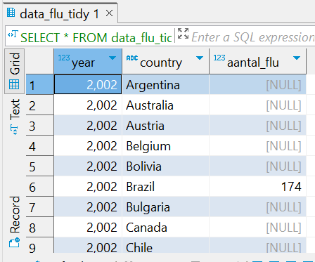
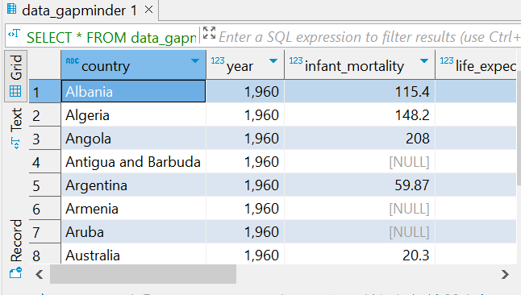

Chapter 11 Dit opdracht wordt de Structured Query Language - or SQL programmeertaal gebruikt voor het beheren van relationele databases.
Met SQL wordt verschillende bewerkingen op de flu and dengue data uitgevoerd, zoals het maken en wijzigen van databasestructuren zoals tabellen toevoegen en het manipuleren van gegevens binnen die structuren.
11.1 Data laden
## # A tibble: 6 × 30
## Date Argentina Australia Austria Belgium Bolivia Brazil Bulgaria Canada
## <date> <dbl> <dbl> <dbl> <dbl> <dbl> <dbl> <dbl> <dbl>
## 1 2002-12-29 NA NA NA NA NA 174 NA NA
## 2 2003-01-05 NA NA NA NA NA 162 NA NA
## 3 2003-01-12 NA NA NA NA NA 174 NA NA
## 4 2003-01-19 NA NA NA NA NA 162 NA NA
## 5 2003-01-26 NA NA NA NA NA 131 NA NA
## 6 2003-02-02 136 NA NA NA NA 151 NA NA
## # ℹ 21 more variables: Chile <dbl>, France <dbl>, Germany <dbl>, Hungary <dbl>,
## # Japan <dbl>, Mexico <dbl>, Netherlands <dbl>, `New Zealand` <dbl>,
## # Norway <dbl>, Paraguay <dbl>, Peru <dbl>, Poland <dbl>, Romania <dbl>,
## # Russia <dbl>, `South Africa` <dbl>, Spain <dbl>, Sweden <dbl>,
## # Switzerland <dbl>, Ukraine <dbl>, `United States` <dbl>, Uruguay <dbl>## # A tibble: 6 × 11
## Date Argentina Bolivia Brazil India Indonesia Mexico Philippines
## <date> <dbl> <dbl> <dbl> <dbl> <dbl> <dbl> <dbl>
## 1 2002-12-29 NA 0.101 0.073 0.062 0.101 NA NA
## 2 2003-01-05 NA 0.143 0.098 0.047 0.039 NA NA
## 3 2003-01-12 NA 0.176 0.119 0.051 0.059 0.071 NA
## 4 2003-01-19 NA 0.173 0.17 0.032 0.039 0.052 NA
## 5 2003-01-26 NA 0.146 0.138 0.04 0.112 0.048 NA
## 6 2003-02-02 NA 0.16 0.202 0.038 0.049 0.041 NA
## # ℹ 3 more variables: Singapore <dbl>, Thailand <dbl>, Venezuela <dbl>## country year infant_mortality life_expectancy fertility
## 1 Albania 1960 115.40 62.87 6.19
## 2 Algeria 1960 148.20 47.50 7.65
## 3 Angola 1960 208.00 35.98 7.32
## 4 Antigua and Barbuda 1960 NA 62.97 4.43
## 5 Argentina 1960 59.87 65.39 3.11
## 6 Armenia 1960 NA 66.86 4.55
## population gdp continent region
## 1 1636054 NA Europe Southern Europe
## 2 11124892 13828152297 Africa Northern Africa
## 3 5270844 NA Africa Middle Africa
## 4 54681 NA Americas Caribbean
## 5 20619075 108322326649 Americas South America
## 6 1867396 NA Asia Western Asia11.2 Data Tidy maken
## # A tibble: 6 × 3
## Date country aantal_flu
## <date> <chr> <dbl>
## 1 2002-12-29 Argentina NA
## 2 2002-12-29 Australia NA
## 3 2002-12-29 Austria NA
## 4 2002-12-29 Belgium NA
## 5 2002-12-29 Bolivia NA
## 6 2002-12-29 Brazil 174## # A tibble: 6 × 3
## year country aantal_flu
## <int> <fct> <dbl>
## 1 2002 Argentina NA
## 2 2002 Australia NA
## 3 2002 Austria NA
## 4 2002 Belgium NA
## 5 2002 Bolivia NA
## 6 2002 Brazil 174## # A tibble: 6 × 3
## Date country aantal_dengue
## <date> <chr> <dbl>
## 1 2002-12-29 Argentina NA
## 2 2002-12-29 Bolivia 0.101
## 3 2002-12-29 Brazil 0.073
## 4 2002-12-29 India 0.062
## 5 2002-12-29 Indonesia 0.101
## 6 2002-12-29 Mexico NA## # A tibble: 6 × 3
## year country aantal_dengue
## <int> <fct> <dbl>
## 1 2002 Argentina NA
## 2 2002 Bolivia 0.101
## 3 2002 Brazil 0.073
## 4 2002 India 0.062
## 5 2002 Indonesia 0.101
## 6 2002 Mexico NA11.3 Een nieuwe PostgreSQL database maken onder de naam “workflowsdb” in Dbeaver
Hier moet de gebruiker zijn eigen gegevens invullen
11.4 ## SQL script
– Inspecteer de inhoud van de data_flu_tidy tabel SELECT * FROM data_flu_tidy LIMIT 10;
– Inspecteer de inhoud van de data_dengue_tidy tabel SELECT * FROM data_dengue_tidy LIMIT 10;
– Inspecteer de inhoud van de data_gapminder tabel
SELECT * FROM data_gapminder LIMIT 10;
—————————————————————-
## Data inspectie in Dbeaver



## Data inspectie in R
## # A tibble: 6,590 × 3
## year country aantal_dengue
## <int> <fct> <dbl>
## 1 2002 Argentina NA
## 2 2002 Bolivia 0.101
## 3 2002 Brazil 0.073
## 4 2002 India 0.062
## 5 2002 Indonesia 0.101
## 6 2002 Mexico NA
## 7 2002 Philippines NA
## 8 2002 Singapore 0.059
## 9 2002 Thailand NA
## 10 2002 Venezuela NA
## # ℹ 6,580 more rows## # A tibble: 19,111 × 3
## year country aantal_flu
## <int> <fct> <dbl>
## 1 2002 Argentina NA
## 2 2002 Australia NA
## 3 2002 Austria NA
## 4 2002 Belgium NA
## 5 2002 Bolivia NA
## 6 2002 Brazil 174
## 7 2002 Bulgaria NA
## 8 2002 Canada NA
## 9 2002 Chile NA
## 10 2002 France NA
## # ℹ 19,101 more rows## # A tibble: 10,545 × 9
## country year infant_mortality life_expectancy fertility population gdp
## <fct> <int> <dbl> <dbl> <dbl> <dbl> <dbl>
## 1 Albania 1960 115. 62.9 6.19 1636054 NA
## 2 Algeria 1960 148. 47.5 7.65 11124892 1.38e10
## 3 Angola 1960 208 36.0 7.32 5270844 NA
## 4 Antigua… 1960 NA 63.0 4.43 54681 NA
## 5 Argenti… 1960 59.9 65.4 3.11 20619075 1.08e11
## 6 Armenia 1960 NA 66.9 4.55 1867396 NA
## 7 Aruba 1960 NA 65.7 4.82 54208 NA
## 8 Austral… 1960 20.3 70.9 3.45 10292328 9.67e10
## 9 Austria 1960 37.3 68.8 2.7 7065525 5.24e10
## 10 Azerbai… 1960 NA 61.3 5.57 3897889 NA
## # ℹ 10,535 more rows
## # ℹ 2 more variables: continent <fct>, region <fct>11.6 De data exporteren naar Dbeaver
Joining Gapminder, Flu, and Dengue Data

## Statistics en Visualizatie

Conclusie
Dit rapport demonstreert de stappen die betrokken zijn bij het laden, opschonen, opslaan, samenvoegen en analyseren van gegevens met behulp van R en PostgreSQL. Het proces omvat het omzetten van onbewerkte gegevens in overzichtelijke formaten, het opslaan en beheren van gegevens in een relationele database, het uitvoeren van joins om gegevens uit meerdere bronnen te combineren en het genereren van beschrijvende statistieken en visualisaties van dengue en flu gevallen in lannd Mexico om betekenisvolle inzichten te verkrijgen.